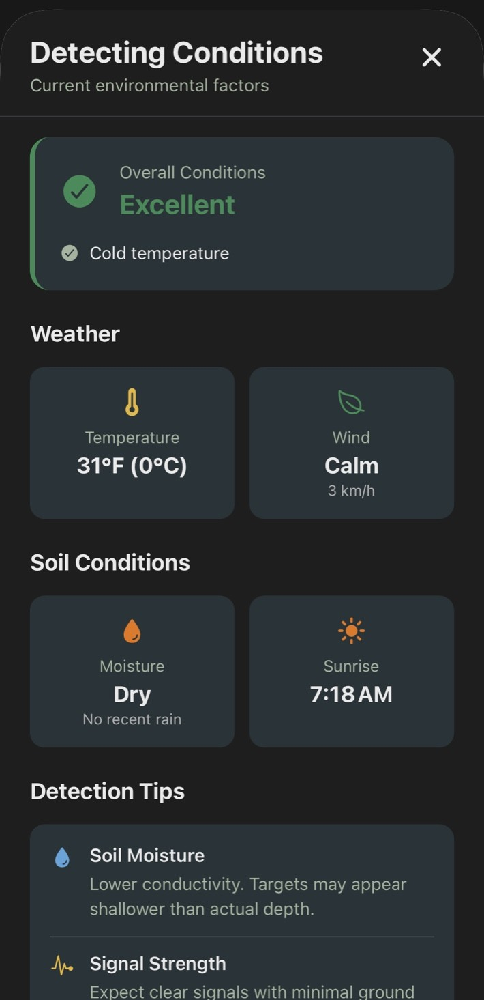

At some point, almost every detectorist starts wondering if their setup is really dialed in the way it should be.
You switch coils for a hunt and it feels better. Signals seem cleaner. Maybe you pull a couple of good finds and walk away thinking, this is the one. Then the next time out, it doesn't feel the same. Or you try a different mode and convince yourself it's hitting deeper, but you can't quite tell if that's actually true or just how it felt in the moment.
That's the problem. Most of it is based on feel.
The Memory Problem
Metal detecting has always leaned heavily on experience, and for good reason, but when it comes to comparing equipment, memory tends to distort things. You remember the great finds and forget the long quiet stretches. You remember the signals that turned into something, not the dozens that didn't. Over time, it becomes easy to believe one setup is better than another without really having anything concrete to back it up.
And once you start switching between different detectors, coils, and modes, that uncertainty only grows. A coil might seem more productive, but maybe you only used it in a better area. A mode might feel deeper, but maybe the soil conditions were easier that day. Without context, everything blends together.
What's missing isn't more time detecting. It's a way to connect what you're finding to how and where you found it.
Tying Finds to Your Setup
Once you start doing that, patterns begin to show up that you simply can't see otherwise.
With Aureal, every find you log can be tied back to the exact setup you were using at that moment. Not just the detector and coil, but also the detection mode, the VDI number you saw on your machine, and even the depth of the target when you recovered it. Over time, that starts to build a much clearer picture of what's actually happening during your hunts.
You might begin to notice that a certain coil consistently pulls better targets in tighter areas, or that a specific VDI range tends to produce coins more often than you expected. Depth starts to matter too. Instead of guessing how deep your machine is really performing, you can look back and see where your better finds are actually coming from.
The Role of Environment
And then there's the environment.
Soil conditions play a bigger role than most people realize. Ground that looks similar on the surface can behave very differently depending on its composition. With that in mind, Aureal tracks the soil type at the start of each hunt, so your finds are not just tied to your equipment, but also to the conditions you were detecting in. Over time, you might notice that certain setups perform better in specific types of soil, or that your results shift depending on where you're hunting.
Replacing Guesswork with Evidence
When all of that starts to come together, the guesswork begins to fall away.
Instead of relying on what felt right, you can look at your own history and see what actually worked. You can compare how often you're finding targets with one setup versus another, how much trash you're digging along the way, and which combinations are producing the kinds of finds you care about most.

For Pro users, this goes even further with deeper analysis and comparisons across your hunts. You can start to see trends across different detectors, coils, and conditions, and understand where your efficiency is improving over time. It turns your hunt history into something you can learn from, not just remember.
In a hobby where small differences can have a big impact, that kind of clarity matters.
Because the goal isn't just to detect more. It's to understand what's working so you can keep improving.
And once you can see that clearly, you stop relying on instinct alone and start building a setup that's proven by your own results.
Let your data decide
Save multiple detector and coil profiles, log VDI and depth with every find, and let Aureal show you which setup is actually delivering results.
Download Aureal